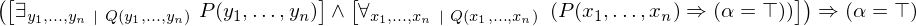
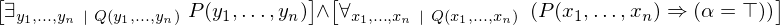
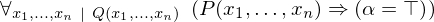
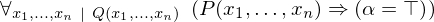
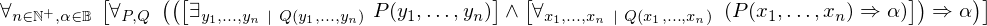
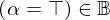
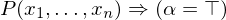
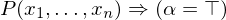
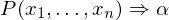

Show the Proof¶
In [1]:
import proveit
# Automation is not needed when only showing a stored proof:
proveit.defaults.automation = False # This will speed things up.
proveit.defaults.inline_pngs = False # Makes files smaller.
%show_proof
Out[1]:
| step type | requirements | statement | ||
|---|---|---|---|---|
| 0 | instantiation | 1, 2 |  , ,  ⊢ ⊢  | |
 : : | ||||
| 1 | axiom | ⊢  | ||
| proveit.logic.booleans.eq_true_elim | ||||
| 2 | modus ponens | 3, 4 | , ⊢ | |
| 3 | instantiation | 5, 6, 7 | ⊢  | |
 : , : , : , : ,  : , : ,  : : | ||||
| 4 | instantiation | 8, 9, 10 | ⊢  | |
:  , ,  :  :  | ||||
| 5 | theorem | ⊢  | ||
| proveit.logic.booleans.quantification.existence.skolem_elim_lemma | ||||
| 6 | assumption | ⊢ | ||
| 7 | instantiation | 11 | ⊢  | |
 : , : ,  : :  | ||||
| 8 | theorem | ⊢  | ||
| proveit.logic.booleans.conjunction.and_if_both | ||||
| 9 | instantiation | 12, 22 | ⊢ | |
: , :  | ||||
| 10 | generalizaton | 13 | ⊢ | |
| 11 | axiom | ⊢  | ||
| proveit.logic.equality.equality_in_bool | ||||
| 12 | theorem | ⊢  | ||
| proveit.logic.booleans.conjunction.left_from_and | ||||
| 13 | deduction | 14 | ,  ⊢  ⊢  | |
| 14 | instantiation | 15, 16 |  , , ⊢ , , ⊢ | |
| : | ||||
| 15 | axiom | ⊢  | ||
| proveit.logic.booleans.eq_true_intro | ||||
| 16 | modus ponens | 17, 18 | , , ⊢ | |
| 17 | instantiation | 19, 20 | , ⊢  | |
| : | ||||
| 18 | assumption | ⊢ | ||
| 19 | instantiation | 21, 22 | ⊢ | |
| : , : | ||||
| 20 | assumption | ⊢ | ||
| 21 | theorem | ⊢  | ||
| proveit.logic.booleans.conjunction.right_from_and | ||||
| 22 | assumption | ⊢ | ||